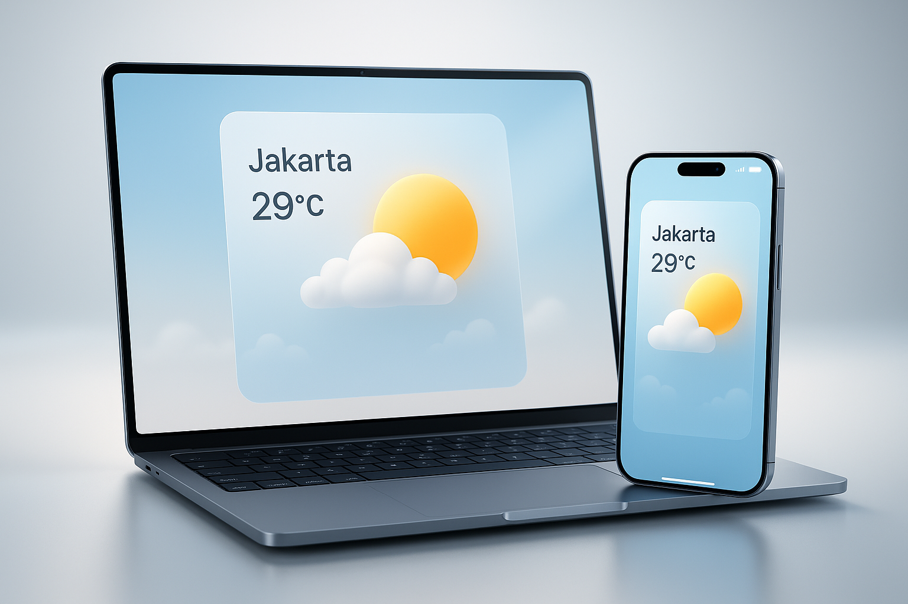

Project Saya


CuacaPro
CuacaPro adalah aplikasi cuaca real-time dengan tampilan modern. Menyajikan info suhu, kondisi cuaca, dan notifikasi cuaca ekstrem secara cepat dan akurat.

Louise Mayay
Louise Mayay adalah website fashion modern yang menjual pakaian elegan untuk pria dan wanita dengan desain berkualitas dan tampilan eksklusif.